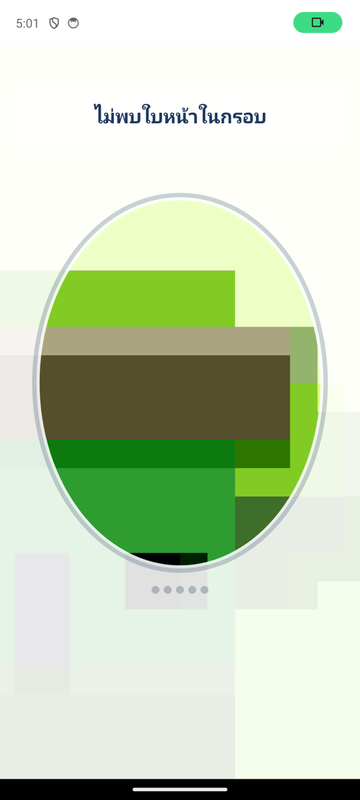
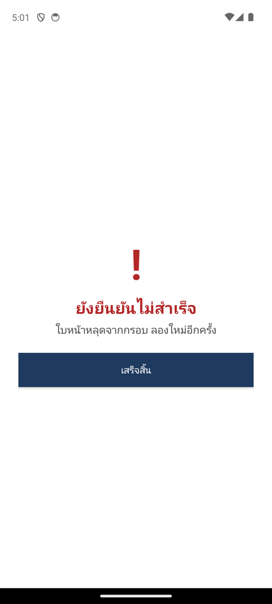

| แพ็กเกจ | com.ekyc:liveness-android:1.0.0 (AAR 120 KB + ML Kit) · สะพานต่อเฟรมเวิร์กใน sdk/bridges/ |
| เวอร์ชันเอกสาร | 1.0 · 19 สิงหาคม 2569 |
| แหล่งโค้ด / ไฟล์ | https://github.com/watcharaponthod-code/ekyc → sdk/ · Releases sdk-android-v1.0.0 (AAR, แอปตัวอย่าง, เอกสารนี้) |
| ต้องการ | Android 7.0+ (minSdk 24) กล้องหน้า · ไม่ต้องมีอินเทอร์เน็ต |
SDK เปิดหน้าจอของตัวเอง (หน้าแนะนำ → กล้อง + คำสั่งท่าทาง → แสงสีจากหน้าจอ → ผล) แล้วส่งผลกลับเป็น JSON หนึ่งก้อน ทุกอย่างประมวลผลบนเครื่องด้วย Google ML Kit ไม่มีภาพหรือข้อมูลใบหน้าออกจากเครื่อง ท่าที่สั่งเป็นชุดเดียวกับระบบเซิร์ฟเวอร์: อ้าปาก (ทุกครั้ง) + สุ่ม 3 จาก กระพริบตา · หันซ้าย · หันขวา · ขยับเข้า · ขยับออก — ทุกท่าเป็นการเคลื่อนไหวจากท่ามองตรงของคนคนนั้นและต้องทำท่ากลับ (หุบปาก ลืมตา ถอยกลับ) รูปนิ่งหรือท่าค้างจึงไม่ผ่าน
| เฟรมเวิร์ก | วิธีใช้ |
|---|---|
| Android Kotlin / Java / Compose | เพิ่ม dependency → registerForActivityResult(EkycLiveness.Contract()) → launch(LivenessConfig()) |
| Flutter | เพิ่ม dependency ใน android/ + คัดลอก sdk/bridges/flutter/EkycLivenessPlugin.kt และ ekyc_liveness.dart → await EkycLiveness.start({'locale':'th'}) |
| React Native (native module) | คัดลอก sdk/bridges/react-native/EkycLivenessModule.kt + ekycLiveness.ts → await startLiveness({locale:'th'}) |
| React Native / Expo (JS ล้วน) | แพ็กเกจ @ekyc/react-native-ekyc-local ในรีโปเดียวกัน (มี UI ของตัวเอง ไม่ต้องใช้ AAR) — <LocalLivenessCamera onResult={…} /> |
| Capacitor / Ionic | คัดลอก sdk/bridges/capacitor/EkycLivenessPlugin.kt → EkycLiveness.start({config: JSON.stringify({…})}) |
| อื่น ๆ (Unity, KMP, Xamarin…) | ทุกอย่างที่เปิด Activity ได้: EkycLiveness.intentFromJson(context, json) → startActivityForResult → EkycLiveness.resultFrom(data).toJson() |
| iOS | ยังไม่มีในรุ่นนี้ — engine เป็น Kotlin ล้วนไม่แตะ Android พอร์ตเป็น Swift + ML Kit iOS ได้ตรงตัว (แพ็กเกจ React Native ใช้ได้บน iOS ผ่าน vision-camera แต่ยังไม่ได้ทดสอบ) |
// settings.gradle.kts
dependencyResolutionManagement { repositories {
google(); mavenCentral()
maven { url = uri("https://raw.githubusercontent.com/watcharaponthod-code/ekyc/master/sdk/android/repo") }
} }
// app/build.gradle.kts
dependencies { implementation("com.ekyc:liveness-android:1.0.0") }
หรือดาวน์โหลด liveness-android-1.0.0.aar จาก Releases วางใน app/libs แล้วเพิ่ม ML Kit face-detection 16.1.7, CameraX 1.4.2 (core/camera2/lifecycle/view), appcompat, activity-ktx เอง · SDK ประกาศ permission กล้องในไลบรารีและขอเองตอนเปิด · ขนาดแอปเพิ่ม ≈ 6–8 MB
val liveness = registerForActivityResult(EkycLiveness.Contract()) { r ->
if (r.passed) proceed() else showAdvice(r.reasons) // r.steps, r.flashScore, r.log
}
liveness.launch(LivenessConfig()) // สุ่มท่าแบบเซิร์ฟเวอร์, ไทย, มีแสงจอ
liveness.launch(LivenessConfig(challenges = listOf("turnLeft", "openMouth", "moveCloser"), locale = "en"))
ActivityResultLauncher<LivenessConfig> liveness =
registerForActivityResult(new EkycLiveness.Contract(), r -> { if (r.getPassed()) {…} });
liveness.launch(LivenessConfig.fromJson(null));
// 1) android/app/build.gradle: implementation("com.ekyc:liveness-android:1.0.0") (+ maven url ข้างบน)
// 2) คัดลอก sdk/bridges/flutter/EkycLivenessPlugin.kt ไป android/app/src/main/kotlin/<package>/
// และใน MainActivity.configureFlutterEngine: flutterEngine.plugins.add(EkycLivenessPlugin())
// 3) คัดลอก sdk/bridges/flutter/ekyc_liveness.dart ไป lib/
final r = await EkycLiveness.start({'locale': 'th'});
if (r['passed'] == true) { … } else { print(r['reasons']); }
// คัดลอก sdk/bridges/react-native/EkycLivenessModule.kt (เพิ่ม EkycLivenessPackage() ใน MainApplication.getPackages)
// และ ekycLiveness.ts
const r = await startLiveness({ locale: 'th' })
if (r.passed) … else console.log(r.reasons, r.steps)
// คัดลอก sdk/bridges/capacitor/EkycLivenessPlugin.kt และ registerPlugin(EkycLivenessPlugin::class.java) ใน MainActivity
const EkycLiveness = registerPlugin('EkycLiveness')
const { passed, resultJson } = await EkycLiveness.start({ config: JSON.stringify({ locale: 'th' }) })


| key | ค่าเริ่มต้น | ความหมาย |
|---|---|---|
challenges | [] = สุ่ม | รายชื่อท่าตามลำดับ: turnLeft turnRight openMouth closeEyes moveCloser moveFarther nod smile (ว่าง = อ้าปากทุกครั้ง + สุ่ม แบบเซิร์ฟเวอร์) |
challengeCount | 4 | จำนวนท่าเมื่อสุ่ม |
locale | th | th / en |
flash, flashRule | true, advisory | แสงจอ 4 สีตอนท้าย (กันรูป/จอ ไม่กันหน้ากาก); rule: off / advisory (รายงานอย่างเดียว) / enforce (ตกถ้าคะแนน < 0.5) |
continuityRule | advisory | ใบหน้าอยู่ต่อเนื่องทั้งรอบ (หลุด ≤ 1.5 s, ไม่กระโดด) |
holdMs | 400 | ค้างท่า ms (กระพริบตาไม่ต้องค้าง) |
perStepTimeoutMs, totalTimeoutMs | 12000, 60000 | เวลาต่อท่า / ทั้งรอบ |
showIntro, showResult | true, true | หน้าแนะนำ / หน้าผลของ SDK — ปิดเพื่อใช้ UI ของคุณเอง (ผลยังส่งกลับเหมือนเดิม) |
title | null | หัวข้อหน้าแนะนำ |
tuning | null | เกณฑ์ท่า (องศาหัน, ระยะอ้าปาก, …) — ค่าเริ่มต้นปรับจากเครื่องจริงแล้ว ไม่ควรแก้โดยไม่มีตัวเลข |
| field | ความหมาย |
|---|---|
passed | ทำท่าครบทุกขั้น (และผ่าน rule ที่ตั้ง enforce) |
reasons | ว่างเมื่อผ่าน · LOCAL_timeout LOCAL_faceLost LOCAL_multipleFaces LOCAL_cancelled CAMERA_PERMISSION · FLASH_SPOOF / FACE_DISCONTINUITY (เฉพาะ enforce) |
challenges | ท่าที่สั่งในรอบนี้ (เริ่มด้วย center เสมอ) |
steps[] | ต่อท่า/ช่วง: best ที่ทำได้ vs needed ที่ต้องการ, direction, reached — ใช้ดูว่าท่าไหนยาก/ปรับเกณฑ์จากข้อมูลจริง |
flashScore, flashOk | 0..1 ความตรงของสีสะท้อนกับสีจอ (≥ 0.5 ok); null เมื่อปิด |
continuityOk, continuityMaxGapMs, continuityMaxJump | ใบหน้าต่อเนื่อง: หลุดนานสุด / กระโดดมากสุด |
durationMs, log[] | เวลาทั้งรอบ · log ตัวเลขล้วนของรอบ (ไม่มีภาพ) — แนบเข้า backend ของคุณได้ |
{"passed":true,"reasons":[],"challenges":["center","openMouth","turnLeft","closeEyes","moveFarther"],
"steps":[{"challenge":"turnLeft","phase":0,"best":41.2,"needed":25.0,"direction":"above","reached":true},…],
"durationMs":14820,"flashScore":0.83,"flashOk":true,"continuityOk":true,"continuityMaxGapMs":120,"continuityMaxJump":0.04,
"log":["0 session challenges=openMouth,turnLeft,closeEyes,moveFarther flash=true","521 first frame",…]}
steps/flashScore ใน result แล้วค่อยเปิด enforce)sdk/android/liveness/src/main/java/com/ekyc/liveness/engine เป็น Kotlin ล้วน พอร์ต 1:1 จาก packages/react-native-ekyc/src/liveness มีเทสต์ 13 ชุด (ท่าค้างไม่ผ่าน, ต้องกลับมามองตรงระหว่างท่า, เกณฑ์เทียบท่ามองตรงของตัวเอง, timeout, framing, นโยบายสุ่ม, continuity, flash, mouth)